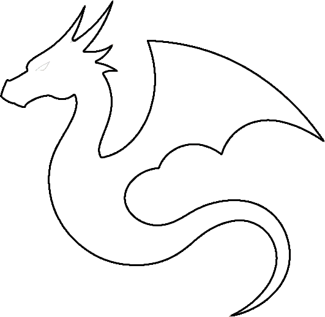
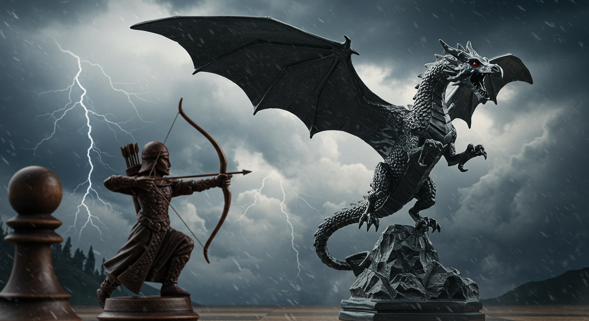

Basic Rules
Cloud Chess follows standard chess rules with the addition of special pieces and a larger 10x10 board.
Special Pieces

Wrath (Dragon)
Can move 1 or 2 squares in any direction (horizontal, vertical, or diagonal). If it moves 2 squares and there's an enemy piece in the middle, it captures both pieces.
♙⇡
Archer
Moves like a pawn but can capture diagonally without moving. Either moves without capturing, or captures without moving.
Board Layout
The game is played on a 10x10 board with the following setup:
- Wraths (Dragons) are positioned in the corners
- Archers are positioned in front of the King and Queen
- All other pieces follow standard chess positioning

Game Modes
- Player vs Player: Play against another person
- Player vs Computer (Easy): Play against an AI that prioritizes captures
- Player vs Computer (Medium): Play against an AI that prioritizes captures and avoids danger
- Player vs Computer (Hard): Play against an AI that prioritizes safe captures, avoids danger, and makes strategic sacrifices when necessary